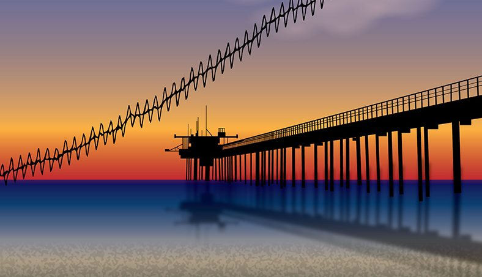
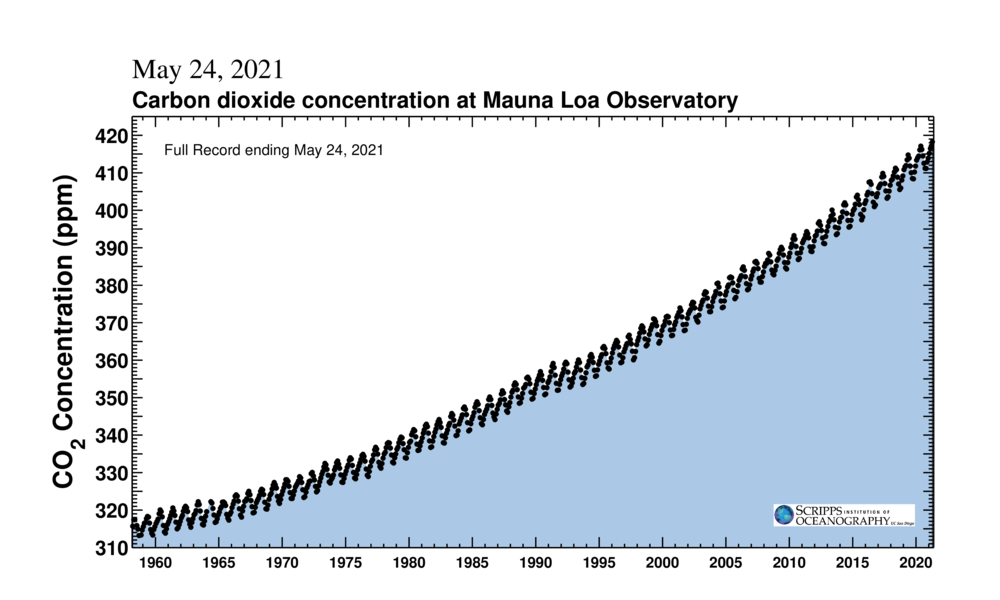

Date：2021年5月29日
Author：Sid
Status：Working
Keeling Curve，在国内有人译为基林曲线。1958年，30岁的Charles D. Keeling在夏威夷的莫纳罗亚 (Mauna Loa)建立了对二氧化碳浓度的长期观测站。长期记录的二氧化碳变化曲线引起了人们对二氧化碳浓度的关注，以及对气候变化的强烈关切。记录了大气二氧化碳浓度变化的曲线被称为Keeling曲线。围绕Keeling曲线，人们发现了许多气候变化中的新问题，发现了许多机理，对于人们理解气候变化，优化模型模拟提供了许多帮助。

现在人们已经认识到了这项工作的重要性，但当时的Keeling是如何想到要开展这样一项工作的呢？
Keeling在研究生阶段想要比较大气和水体中二氧化碳的相对丰度，他计划第一步就测量出大气中的二氧化碳水平。在当时，这项工作并没有人做出很好的精确数据，也没有现成的设备。Keeling借鉴了1916年一款原型机，自己制作了测量设备，跑到Big Sur去测量二氧化碳浓度，测得大气中二氧化碳大概是310 ppm。
这时，Keeling自然地想要检验这个结果是否是稳定的。所以他在一天中每隔几个小时就采样一次，并在不同的地点进行了测量，不仅仅在是Big Sur有测量数据。
Keeling的工作引起了Roger Relleve的兴趣。Relleve找到Keeling，希望他能够负责一个新项目，到全球各地区测量浓度，不过是隔段时间测量一次，比如十年一次。但是Keeling希望能采取更严谨更全面的方法：每天测量一次。1
Roger Revelle: “Keeling’s a peculiar guy, He wants to measure CO2 in his belly. And he wants to do it with the greatest precision and the greatest accuracy that he can.”
正是对严谨对细节的坚持，给人们带来了Keeling曲线，打开了人们从看全球变化的视窗。
一条keeling曲线让科学家们发现了很多科学问题，发表了几十篇nature/science文章。

年内含量的季节波动，冬季高夏季低，反应了植物的活动带来的季节变异。
人们还发现，如果人类排放的二氧化碳全部留在大气中，形成的曲线应该远远在keeling曲线之上，那么这条虚拟曲线和真实曲线之间的差所代表的碳就被人们称为失踪的碳(Missing Carbon)2，这反应了除了大气之外，还有其他的碳汇储存了人类排放的二氧化碳。人们找到了海洋，还找到了陆地。海洋吸收的碳相对容易计算，人们通过直接计算得到了大致的碳汇大小；但陆地的异质性要复杂的多，人们只能通过间接的方法知道陆地碳汇的总大小，却不能计算出来这些碳汇到底分布在陆地的哪里，是如何发生的。
（待检验）站点受到海风的影响，Keeling曲线或许并不能反映全球浓度的变化。到底在哪里选取站点，测量的二氧化碳浓度才能更好的反应全球水平，是一个很好的、待解答的问题。期待王旭辉老师的新文章中对这个问题的讨论。
欢迎来信与我交流，我的邮箱是cnqdycq@163.com.